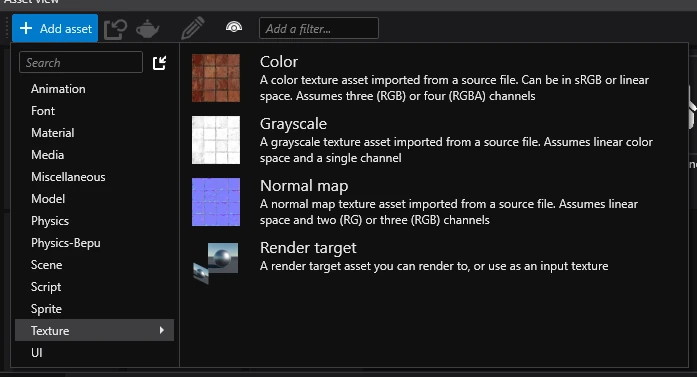
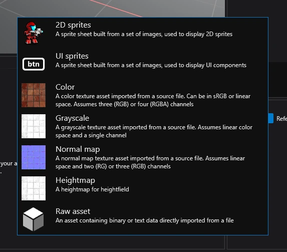
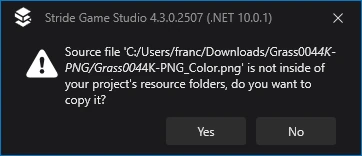
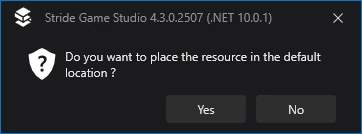
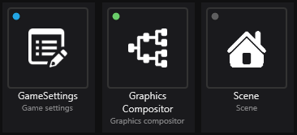
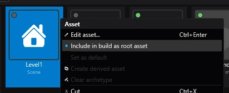

Assets
Beginner
An asset is a representation of an element of your game inside Game Studio, such as texture, animation or model.
Create an asset
To create an asset, click the ➕ Add asset button in the Asset view and select the type of asset you want to create.

Create assets from resources
To create an asset from a resource, simply drag and drop it from a folder.
Then, select the type of resource you want to create.

You will be asked, if you want to copy the dragged file to the resources folder. Most of the time, you want to do this, in order to make the project easier to share and use version control with.

Finally, you will be asked if you want to move it to the default location. Again, most of the time you want to do this, unless you need more control over where resources end up.

Green, blue and gray dots

Every asset has a little dot in the top left corner of their icon. This dot indicates if an asset is going to be included when building the project:
- Blue - the asset will be included in the build no matter if it's needed or not.
- Green - the asset will be included in the build, because a different asset needs it.
- Gray - the asset will not be included in the build.
Stride doesn't include assets which aren't used anywhere, meaning that they cannot be accessed when running the game. In order to ensure, that an asset will always be included in the build, right click on it and select Include in build as root asset.

Further reading
For more information, visit Assets.